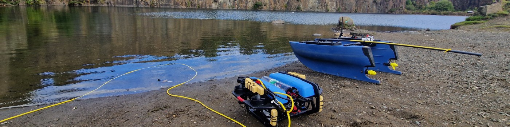
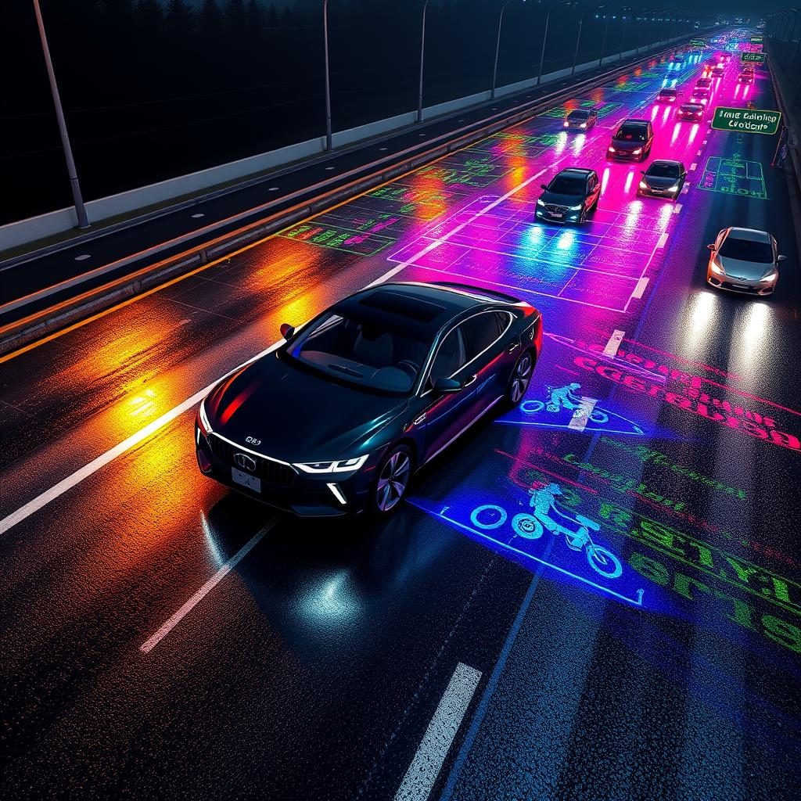
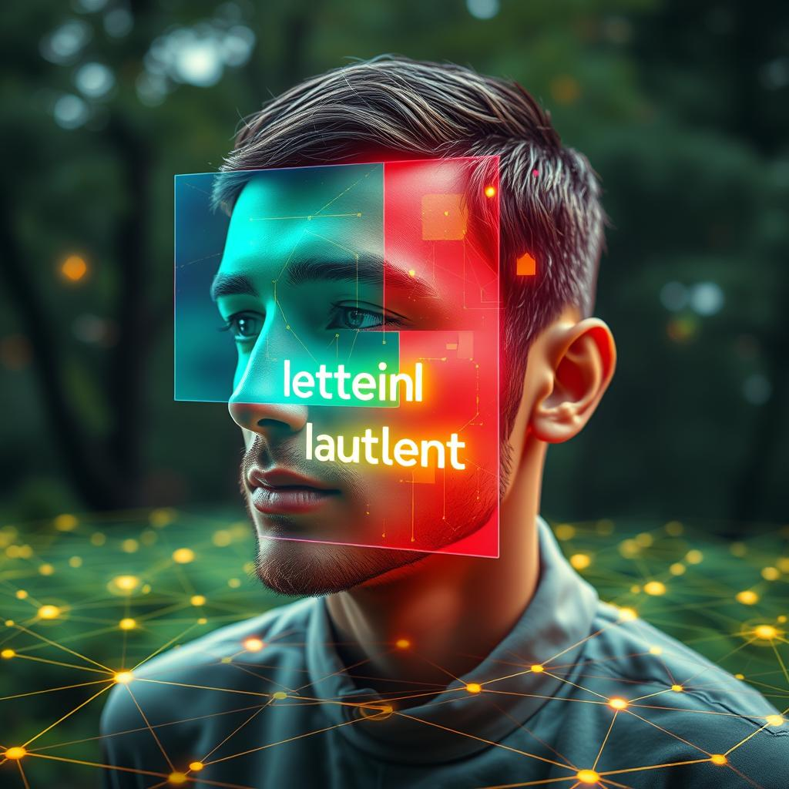
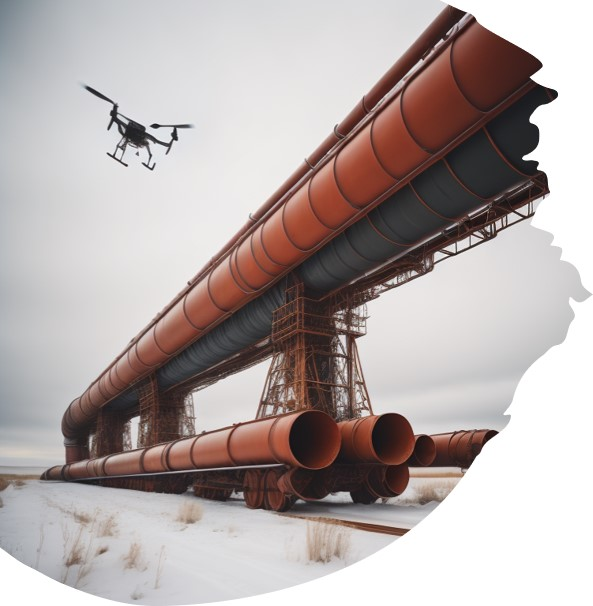
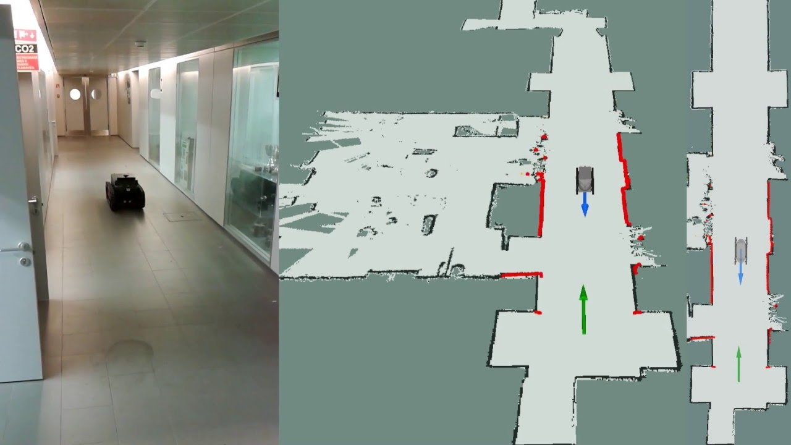
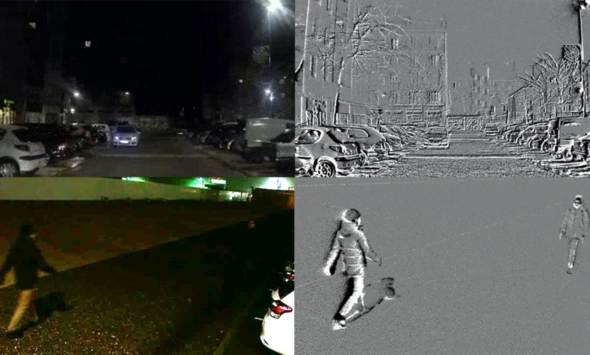
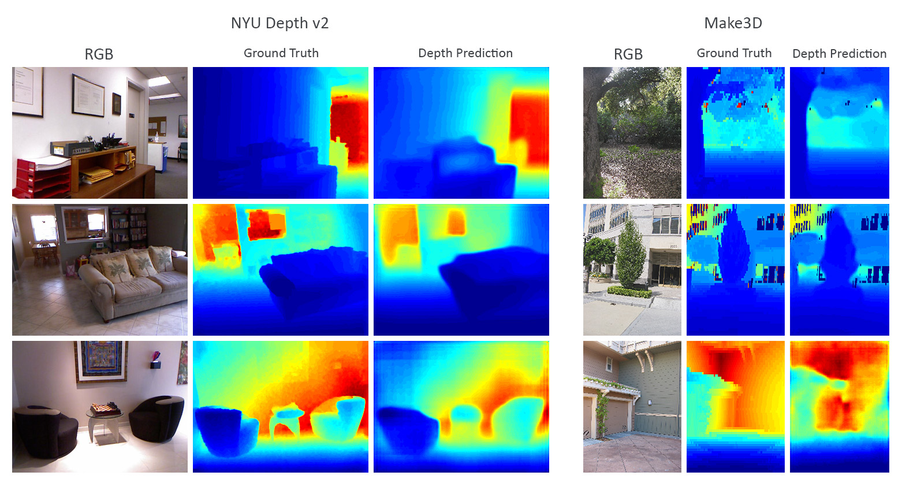
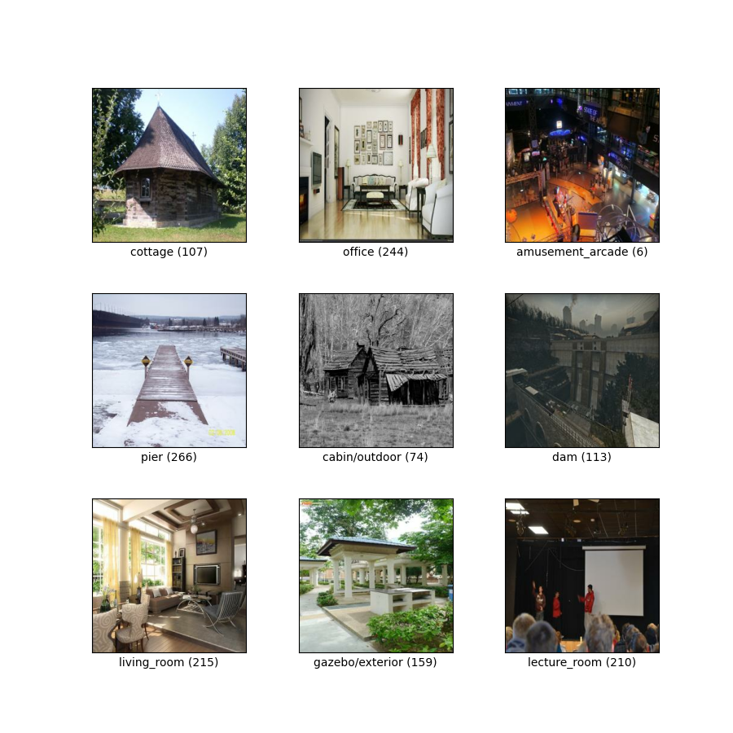
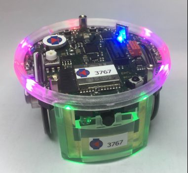

BlueROV2 Underwater Inspection & Digital Twin
A photo-realistic digital twin of an offshore wind farm built with BlueROV2, Unreal Engine and a ROS plugin to inspect underwater anodes. The system performs Visual SLAM and real-time 3D reconstruction using Nvidia nvblox, semantic segmentation of anodes and valves, stereo-to-point-cloud conversion, and depth estimation deployed on edge with TensorRT. An end-to-end ROS-gRPC perception pipeline streams segmentation classes, object IDs and depth data to an LLM knowledge manager to enhance human-in-the-loop ROV autonomy.

Demo Videos

Trained SSD MobileNet v2 and SSD ResNet50 v1 on the Waymo Dataset for object detection, selecting the best model for deployment. Also performed end-to-end 3D object detection from LiDAR point clouds using FPN ResNet and YOLO (Darknet), fused with Kalman filter sensor fusion on the Waymo Perception Dataset. (Udacity Self-Driving Car Nanodegree)

Two projects combined in one repo: (1) An application that combines the Segment Anything Model (SAM) with Stable Diffusion to automatically generate a segmentation mask from a text prompt for any image. (2) A Style GAN used to generate synthetic training datasets. (Udacity Generative AI Course)
Technical lead for the autonomous mobile robot team at RobuildX (stealth start-up). Designing the full perception stack to improve the autonomy of construction robots on active construction sites, including 3D scene understanding, obstacle avoidance, and real-time decision making.

An intelligent drone equipped with LiDAR, RGB and depth cameras capable of 3D environment mapping, visual SLAM, semantic mapping, obstacle avoidance, and pipeline leak detection using YOLOv8 and Facebook's Detection Transformer. Motion and path planning algorithms are used to autonomously track the pipeline.

The Extended Kalman Filter algorithm is employed to fuse visual odometry readings and GPS readings in order to achieve precise robot localization.. The Oxford Robot Car Dataset is used for this project. In robot localization, GPS alone isn't accurate due to local obstacles and limited precision. To improve accuracy, the Extended Kalman Filter fuse odometry and GPS data, reducing odometry drift and enhancing GPS positions for outdoor robotics.

The event camera capture changes in brightness asynchronously and in real time having the advantage of low power consumption, High Dynamic range as compared to conventional cameras. The Prophesee EVK3 and EVK4 event camera is designed to wirelessly transmits event frames via an image pipeline to an Nvidia Jetson remote workstation using a Raspberry Pi 4 companion computer. A 3D mount for the camera was designed using AUTOCAD.

In this project, a Lidar histogram is utilized to create a depth map of the environment using a straightforward match filter algorithm. The depth map aids in visualizing the distances of objects within a scene.

In this project a subset of the MIT Places dataset has undergone testing with a variety of machine learning algorithms to classify different locations, and their respective accuracies have been compared.

Using Genetics Algorithm, an E-puck Robot is trained to navigate through a maze environment and reach its destination.
In this project, an ultrasonic sensor is employed to detect incoming intruders, triggering an alarm system in response.
In this project we are able to smoothing an image, improve the lighting of a dark image and remove ripples from images.
This project makes use of C# to build a Windows Desktop Application for retail management of an African Restaurant.